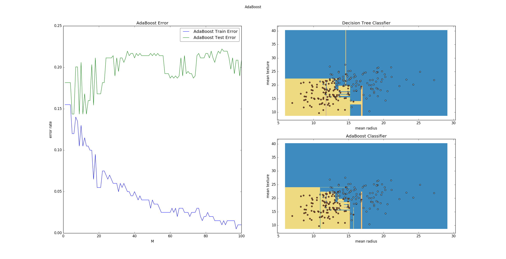
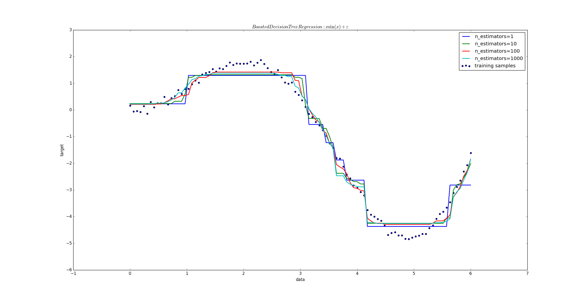
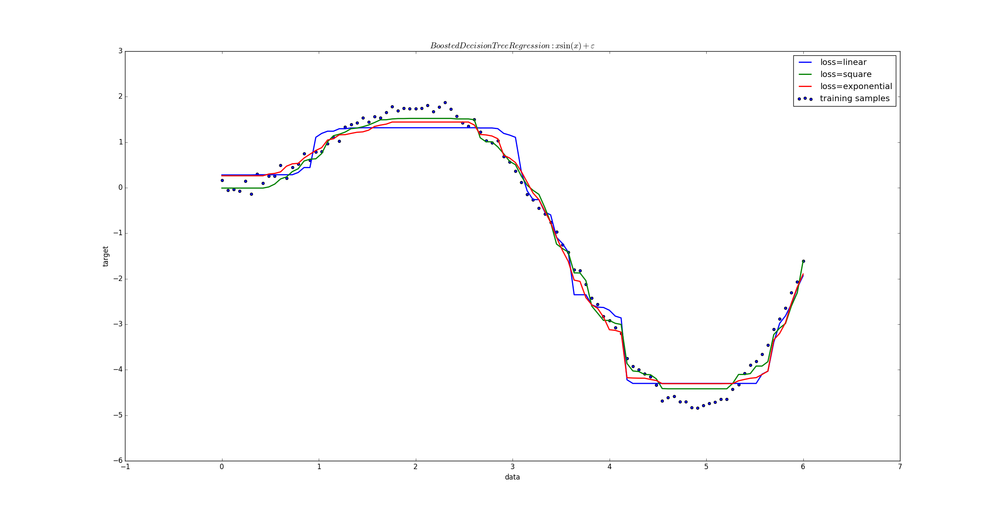
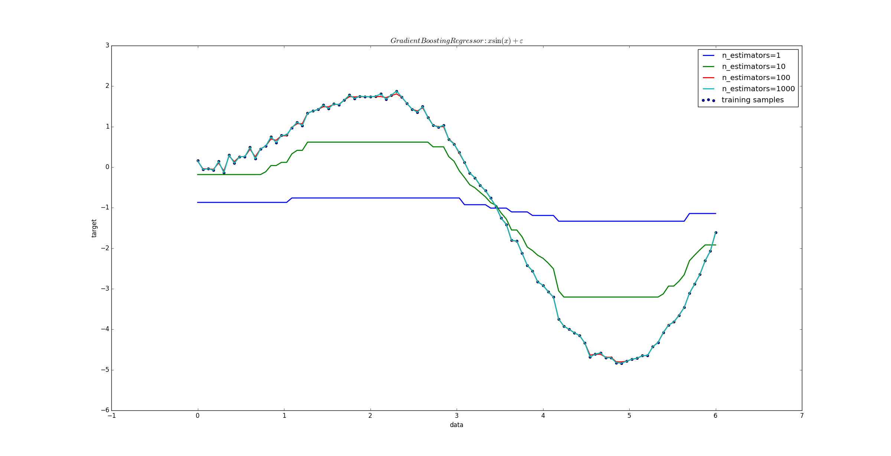
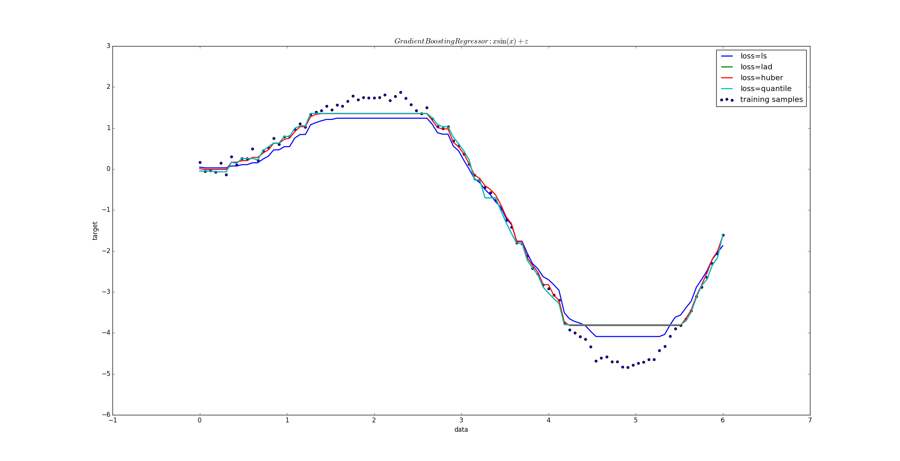

1.提升方法(boosting) 是一种常用的统计学习方法。在分类问题中，它通过改变训练样本的权重，学习多个分类器，并将这些分类器进行线性组合，提高分类的能力。
2.提升方法的基本思想：对于一个复杂任务来说，将多个专家的判断进行适当的综合所得出的判断，要比其中任何一个专家单独的判断要好。
类似于”三个臭皮匠顶一个诸葛亮“
3.在概率近似正确（probably approximately correct,PCA）学习的框架下：
可以证明：强可学习与弱可学习是等价的。
即若在学习中发现了 ”弱学习算法“ ，则可以通过某些办法将它提升为 ”强学习算法“
4.对于分类问题而言，给定一个训练集，求一个比较粗糙的分类规则（弱分类器）要比求精确的分类规则（强分类器）要容易得多。
那么：
每一轮中如何改变训练数据的权值或者说概率分布？
AdaBoost 的做法是：提高那些被前一轮弱分类器错误分类样本的权值，而降低那些被正确分类样本的权值。
这样一来，那些没有得到正确分类的数据由于权值的加大而受到后一轮的弱分类器的更大关注，于是分类问题被一系列的弱分类器”分而治之“
如何将一系列弱分类器组合成一个强分类器？
AdaBoost 采用加权多数表决的方法。加大分类误差率较小的弱分类器的权值，使得它在表决中起较大作用；减小分类误差率较大的弱分类器的权值，使得它在表决中起较小的作用
5.AdaBoost 算法：
即：所有误分类点的权重之和。权重越大的误差分类点，其在误差率中占比越大
该系数表示\(G_m(\mathbf x)\) 在最终分类器中的重要性。它是 \(e_m\) 的单调减函数（说明误差越小的基本分类器，其重要性越高）
对于正确分类样本，\(G_m(\mathbf x_i)=y_i\) 下一轮权重为：\(w_{m+1,i}=\frac{w_{mi}}{Z_m}\exp^{-\alpha_m}\)；对于错误分类样本，\(G_m(\mathbf x_i)\neq y_i\) 下一轮权重为：\(w_{m+1,i}=\frac{w_{mi}}{Z_m}\exp^{\alpha_m}\) 。两者比较，误分类样本的权重是正确分类样本的权重的 \(\exp^{2\alpha_m}=\frac{e_m}{1-e_m}\) 倍。于是误分类样本在下一轮学习中权重更大。
这里实现了 M 个基本分类器的加权表决。系数 \(\alpha_m\) 表示了基本分类器\(G_m(\mathbf x)\) 的重要性。所有的 \(\alpha_m\) 之和并不为 1.
6.AdaBoost 算法解释：
AdaBoost 提高那些被前一轮弱分类器错误分类样本的权值，而降低那些被正确分类样本的权值。这是通过更新训练数据集的权值分布： \(D_{m+1}=(w_{m+1,1},w_{m+1,2},\cdots,w_{m+1,N}),\quad i=1,2,\cdots,N\)，其中：$$w_{m+1,i}=\frac{w_{mi}}{Z_m}\exp(-\alpha_my_iG_m(\mathbf x_i)),i=1,2,\cdots,N$$ 来体现的
AdaBoost 采用加权多数表决的方法。加大分类误差率较小的弱分类器的权值，使得它在表决中起较大作用；减小分类误差率较大的弱分类器的权值，使得它在表决中起较小的作用。这是通过\(G_m(\mathbf x)\) 的系数（这里对数是自然对数）：
$$\alpha_m=\frac 12 \log \frac{1-e_m}{e_m}$$ 来体现的。其中$$e_m=P(G_m(\mathbf x_i) \neq y_i)=\sum_{i=1}^{N}w_{mi}I(G_m(\mathbf x_i) \neq y_i)$$
7.AdaBoost两个特点：
8.AdaBoost 算法训练误差分析：
定理一：AdaBoost的训练误差界： AdaBoost算法最终分类器的训练误差上界为： $$\frac 1N \sum_{i=1}^{N}I(G(\mathbf x_i) \neq y_i) \le \frac 1N \sum_{i=1}^{N}\exp(-y_if(\mathbf x_i))=\prod_{m=1}^{M}Z_m$$ 其中 \(Z_m=\sum_{i=1}^{N}w_{mi}\exp(-\alpha_my_iG_m(\mathbf x_i))\)
这一定理说明，可以在每一轮选取适当的 \(G_m\) 使得 \(Z_m\) 最小，从而使得训练误差下降最快
定理二：二类分类 AdaBoost 的训练误差界： $$\prod_{m=1}^{M}Z_m=\prod_{m=1}^{M}[2\sqrt{e_m(1-e_m)}]=\prod_{m=1}^{M}\sqrt{(1-4\gamma_m^{2})} \le \exp(-2\sum_{m=1}^{M}\gamma_m^{2})$$ 其中 \(\gamma_m=\frac 12-e_m\)
这表明在此条件下， AdaBoost 的训练误差是以指数速率下降的
9.AdaBoost 算法具有自适应性，即它能够适应弱分类器各自的训练误差率。这也是它的名字（适应的提升）的由来
1.AdaBoost 算法可以认为是：模型为加法模型、损失函数为指数函数、学习算法为前向分步算法时的二类分类学习方法。
2.考虑加法模型： \(f(\mathbf x)=\sum_{m=1}^{M}\beta_mb(\mathbf x;\gamma_m)\) 其中 \(b(\mathbf x;\gamma_m)\) 为基函数， \(\gamma_m\) 为基函数的参数， \(\beta_m\) 为基函数的系数。
3.前向分步算法：
4.定理： AdaBoost 算法是前向分步加法算法的特例。此时模型是由基本分类器组成的加法模型，损失函数是指数函数。
1.提升树：它是以分类树或者回归树为基本分类器的提升方法。提升树被认为是统计学习中，性能最好的方法之一
提升树模型可以表示为决策树的加法模型： $$f(\mathbf x)=f_M(\mathbf x)=\sum_{m=1}^{M}T(\mathbf x;\Theta_m)$$ 其中 \(T(\mathbf x;\Theta_m)\) 表示决策树； \(\Theta_m\) 为决策树的参数； M 为决策树的数量
2.提升树算法：提升树算法采用前向分步算法。首先确定初始提升树 \(f_0(\mathbf x)=0\)， 第 m 步模型为： $$f_m(\mathbf x)=f_{m-1}(\mathbf x)+T(\mathbf x;\Theta_m)$$ 其中 \(f_{m-1}(\mathbf x)\) 为当前模型。
通过经验风险极小化确定下一棵决策树的参数 \(\Theta_m\)：$$\hat\Theta_m=\arg\min_{\Theta_m}\sum_{i=1}^{N}L(y_i,f_{m-1}(\mathbf x_i)+T(\mathbf x_i;\Theta_m))$$
3.不同问题的提升树学习算法主要区别在于使用的损失函数不同。
对于二类分类问题，只需要将第一节中的 AdaBoost 算法中的基本分类器限制为二类分类树即可。
4.已知一个训练数据集 \(T=\{(\mathbf x_1,y_1),(\mathbf x_2,y_2),\cdots,(\mathbf x_N,y_N)\},\quad \mathbf x_i \in \mathcal X \subseteq \mathbb R^{n},y_i \in \mathcal Y \subseteq \mathbb R\)，其中 \(\mathcal X\) 为输入空间， \(\mathcal Y\) 为输出空间
如果将输入空间 \(\mathcal X\) 划分为 J 个互不相交的区域 \(\mathbf R_1,\mathbf R_2,\cdots,\mathbf R_J\)，并且在每个区域上确定输出的常量 \(c_j\)， 则树可以表示为： \(T(\mathbf x;\Theta)=\sum_{j=1}^{J}c_jI(\mathbf x \in \mathbf R_j)\)
其中参数 \(\Theta=\{(\mathbf R_1,c_1),(\mathbf R_2,c_2),\cdots,(\mathbf R_J,c_J)\}\) 表示树的划分区域和各区域上的尝试。 J 是回归树的复杂度即叶结点个数。
5.回归问题的提升树算法：
拟合残差：生成一个回归树，使得它的损失函数最小
6.提升树利用加法模型与前向分步算法实现学习的优化过程。
针对这个问题，Freidman提出了梯度提升算法。它是利用最速下降法的近似方法，其关键是利用损失函数的负梯度在当前模型的值作为回归问题提升树算法中残差的近似值，拟合一个回归树
7.梯度提升算法：
它是一颗只有根节点的树，根节点的类别为使得损失函数最小的类别
计算损失函数的负梯度在当前模型的值，将它作为残差估计。对于平方损失函数，他就是通常意义上的残差；对于一般损失函数，他就是残差的近似
1.AdaBoostClassifier是scikit-learn提供的AdaBoost分类器：
sklearn.ensemble.AdaBoostClassifier(base_estimator=None, n_estimators=50, \
learning_rate=1.0, algorithm='SAMME.R', random_state=None)
参数
base_estimator：一个基础分类器对象。默认为DecisionTreeClassfier。该基础分类器必须支持采样本权重n_estimators：一个整数，指定基础分类器的数量（默认为50）。当然如果训练集已经完美的训练好了，可能算法会提前停止。此时基础分类器数量少于该值learning_rate：浮点数。默认为1.Learning rate shrinks the contribution of each classifier by learning_rate。在learning_rate和n_estimators之间会有所折中algorithm：一个字符串，指定算法。默认为'SAMME.R'
'SAMME.R':使用SAMME.R real boosting algorithm 算法。基础分类器对象必须指出计算类别的概率
SAMME.R real boosting algorithm算法会根据概率来计算样本的类别
'SAMME'：使用SAMME discrete boosting algorithm算法。
通常
'SAMME.R'收敛更快，且误差更小，迭代数量更少
random_state：一个整数（作为随机数种子）或者RandomState实例或者None。用于指定一个随机数生成器来混洗样本集属性：
estimators_：分类器的实例。它存放的是所有训练过的子分类器classes_：一个数组，形状为[n_classes]，类别标签n_classes_：一个整数，类别数量estimator_weights_：一个浮点数的数组，给出了每个子分类器的权重estimator_errors_：一个浮点数的数组，给出了每个子分类器的分类误差feature_importances_：一个数组，形状为[n_features]。如果base_estimator支持，则它给出了每个特征的重要性。import numpy as np
import matplotlib.pyplot as plt
from matplotlib import gridspec
from sklearn import datasets
from sklearn.tree import DecisionTreeClassifier
from sklearn.metrics import zero_one_loss
from sklearn.ensemble import AdaBoostClassifier
######### 加载数据############
data=datasets.load_breast_cancer()
X=data.data[:, 0:2] # 取前两个特征
Y=data.target
X_train,X_test=X[:200],X[200:]
Y_train,Y_test=Y[:200],Y[200:]
############## 训练 ###########
#### AdaBoost
n_estimators = 100
ada=AdaBoostClassifier(n_estimators=n_estimators).fit(X_train,Y_train)
### 决策树
dct = DecisionTreeClassifier().fit(X_train, Y_train)
###########绘制图形#############
fig=plt.figure()
fig.suptitle("AdaBoost")
gs=gridspec.GridSpec(2,2)
ax_err=plt.subplot(gs[:,0]) # 放置误差曲线
ax_err.set_title("AdaBoost Error")
ax_dt=plt.subplot(gs[0,1]) # 决策树
ax_dt.set_title("Decision Tree Classfier")
ax_ada=plt.subplot(gs[1,1]) # AdaBoost
ax_ada.set_title("AdaBoost Classifier")
############### 绘制误差曲线 ############
ada_err_train = np.zeros((n_estimators,))
ada_err_test = np.zeros((n_estimators,))
##训练误差
for i, y_pred in enumerate(ada.staged_predict(X_train)):
ada_err_train[i] = zero_one_loss(y_pred, Y_train)
ax_err.plot(np.arange(n_estimators) + 1, ada_err_train, label='AdaBoost Train Error')
##测试误差
for i, y_pred in enumerate(ada.staged_predict(X_test)):
ada_err_test[i] = zero_one_loss(y_pred,Y_test)
ax_err.plot(np.arange(n_estimators) + 1, ada_err_test, label='AdaBoost Test Error')
### 设置图形
ax_err.set_xlabel('M')
ax_err.set_ylabel('error rate')
ax_err.legend(loc='upper right', fancybox=True,framealpha=0.5)
########### 绘制网格 #############
plot_step=0.02
x_min, x_max = X[:, 0].min() - 1, X[:, 0].max() + 1
y_min, y_max = X[:, 1].min() - 1, X[:, 1].max() + 1
xx,yy = np.meshgrid(np.arange(x_min, x_max, plot_step),np.arange(y_min,y_max,plot_step))
clfs=[dct,ada]
axes=[ax_dt,ax_ada]
for i,clf in enumerate(clfs):
Z = clf.predict(np.c_[xx.ravel(), yy.ravel()])
Z = Z.reshape(xx.shape)
axes[i].contourf(xx, yy, Z, cmap=plt.cm.Paired)
axes[i].set_xlabel(data.feature_names[0])
axes[i].set_ylabel(data.feature_names[1])
axes[i].scatter(X_train[:, 0], X_train[:, 1], c=Y_train, cmap=plt.cm.Paired)
plt.show()

2.AdaBoostRegressor是 scikit-learn提供的AdaBoost回归器
sklearn.ensemble.AdaBoostRegressor(base_estimator=None, n_estimators=50, \
learning_rate=1.0, loss='linear', random_state=None)
该类通过AdaBoost.R2算法实现的
参数：
base_estimator：一个基础回归器对象。默认为DecisionTreeRegressor。该基础回归器必须支持采样本权重n_estimators：一个整数，指定基础回归器的数量（默认为50）。当然如果训练集已经完美的训练好了，可能算法会提前停止。此时基础回归器数量少于该值learning_rate：浮点数。默认为1.Learning rate shrinks the contribution of each classifier by learning_rate。在learning_rate和n_estimators之间会有所折中loss：一个字符串。指定了损失函数。可以为：
'linear':线性损失函数（默认）'square'：平方损失函数'exponential'：指数损失函数random_state：一个整数（作为随机数种子）或者RandomState实例或者None。用于指定一个随机数生成器来混洗样本集属性：
estimators_：回归器的实例。它存放的是所有训练过的子回归器estimator_weights_：一个浮点数的数组，给出了每个子回归器的权重estimator_errors_：一个浮点数的数组，给出了每个子回归器的分类误差feature_importances_：一个数组，形状为[n_features]。如果base_estimator支持，则它给出了每个特征的重要性。import numpy as np
import matplotlib.pyplot as plt
from sklearn.ensemble import AdaBoostRegressor
######## 创建数据 #############
rng = np.random.RandomState(1)
X = np.linspace(0, 6, 100)[:, None]
Y = (X*np.sin(X)).ravel() + rng.normal(0, 0.1, X.shape[0])
fig=plt.figure()
ax=fig.add_subplot(111)
ax.set_xlabel("data")
ax.set_ylabel("target")
ax.set_title(r"$Boosted Decision Tree Regression:x\sin(x)+\varepsilon$")
# 绘图
ax.scatter(X,Y,label="training samples")
ns=[1,10,100,1000]
### 训练和绘图：
for n in ns:
regr = AdaBoostRegressor(n_estimators=n, random_state=rng)
regr.fit(X, Y)
pred_Y=regr.predict(X)
ax.plot(X, pred_Y,label="n_estimators=%d"%n, linewidth=2)
ax.legend()
plt.show()
 
3.GradientBoostingRegressor是scikit-learn提供的AdaBoost梯度提升回归器
sklearn.ensemble.GradientBoostingRegressor(loss='ls', learning_rate=0.1,\
n_estimators=100, subsample=1.0, min_samples_split=2, min_samples_leaf=1,\
min_weight_fraction_leaf=0.0,\ max_depth=3, init=None, random_state=None, \
max_features=None, alpha=0.9, verbose=0,\
max_leaf_nodes=None, warm_start=False, presort='auto')
它是AdaBoost算法的提升树模型。它通过前向分步算法实现学习的优化过程。
参数为：
loss：一个字符串。指定损失函数：
'ls'：最小平方回归'lad'：最小绝对偏差。'huber'：是前两者的结合.通过alpha参数指定比例'quantile'：分位数回归（分位数值得百分之几），通过alpha参数指定分位数n_estimators：一个整数，指定基础回归器的数量（默认为100）。梯度提升算法能够防止过拟合，因此该值越大，效果越好learning_rate：浮点数。默认为 0.1 .Learning rate shrinks the contribution of each classifier by learning_rate。在learning_rate和n_estimators之间会有所折中max_depth：一个整数。指定每个回归树的最大深度。该值会限制树的结点数量。通常调整该参数会得到比较好的模型。
如果
max_leaf_nodes参数不是None，则忽略本参数
min_samples_split：整数。指定树的每个内部节点所包含的最少的样本数量min_samples_leaf:整数。指定树的每个叶子节点所包含的最少的样本数量、min_weight_fraction_leaf：浮点数。如果一个样本是叶子节点中，则它最少具有该值的权重系数subsample：一个浮点数。该值指定有多少倍的样本用于每个子回归器的学习。
max_features：一个浮点数，字符串，整数，或者None，指定当划分特征时，考虑的最大特征数量
max_features个特征来划分int(max_features * n_features)个特征'auto'：则考虑 n_features个特征'sqrt'：则考虑sqrt(n_features)个特征'log2'：则考虑log2(n_features)个特征None：则考虑n_features个特征
如果
max_features<n_features则会导致变量减少同时偏差增大如果未找到一个有效的划分，则会突破
max_features限制继续寻找特征来划分
max_leaf_nodes：整数或者None。指定最大叶结点数量。该限制是最优先考虑的限制。如果为None，则没有限制alpha:一个浮点数。只有当loss='huber'或者loss='quantile'时才有效。指定了alpha-quantileinit：一个BaseEstimator或者None。该初始的estimator用于计算初始的预测。
None,则使用loss.init_estimatorverbose：一个整数。如果为0则不输出信息；如果为1则每隔一段时间打印一次信息；如果大于1，则每棵树都打印信息warm_start:布尔值。当是True时，则继续使用上一次训练的结果。否则重新开始训练random_state：一个整数（作为随机数种子）或者RandomState实例或者None。用于指定一个随机数生成器来混洗样本集presort：一个布尔值或者'auto'。如果为True，则会先对数据排序以加速回归树的划分过程。如果是'auto'，则会对稠密数据进行提前排序。如果对稀疏数据，你设置了presort则会报错属性：
feature_importances_ : 一个数组，形状为[n_features]。它给出了每个特征的重要性。oob_improvement_ : 一个数组，形状为[n_estimators]`。The improvement in loss (= deviance) on the out-of-bag samples relative to the previous iteration. oob_improvement_[0] is the improvement in loss of the first stage over the init estimator.
train_score_ :一个数组，形状为[n_estimators]：The i-th score train_score_[i] is the deviance (= loss) of the model at iteration i on the in-bag sample. If subsample == 1 this is the deviance on the training data.
loss_ : 损失函数。具体的损失函数对象init : BaseEstimator：The estimator that provides the initial predictions. Set via the init argument or loss.init_estimator.
estimators_ :DecisionTreeRegressor的数组，形状为[n_estimators, 1]。训练到的子回归器
import numpy as np
import matplotlib.pyplot as plt
from sklearn.ensemble import AdaBoostRegressor,GradientBoostingRegressor
######## 创建数据 #############
rng = np.random.RandomState(1)
X = np.linspace(0, 6, 100)[:, None]
Y = (X*np.sin(X)).ravel() + rng.normal(0, 0.1, X.shape[0])
fig=plt.figure()
ax=fig.add_subplot(111)
ax.set_xlabel("data")
ax.set_ylabel("target")
ax.set_title(r"$GradientBoostingRegressor:x\sin(x)+\varepsilon$")
# 绘图
ax.scatter(X,Y,label="training samples")
ns=[1,10,100,1000]
### 训练和绘图：
for n in ns:
regr = GradientBoostingRegressor(n_estimators=n, random_state=rng)
regr.fit(X, Y)
pred_Y=regr.predict(X)
ax.plot(X, pred_Y,label="n_estimators=%d"%n, linewidth=2)
ax.legend()
plt.show()
 